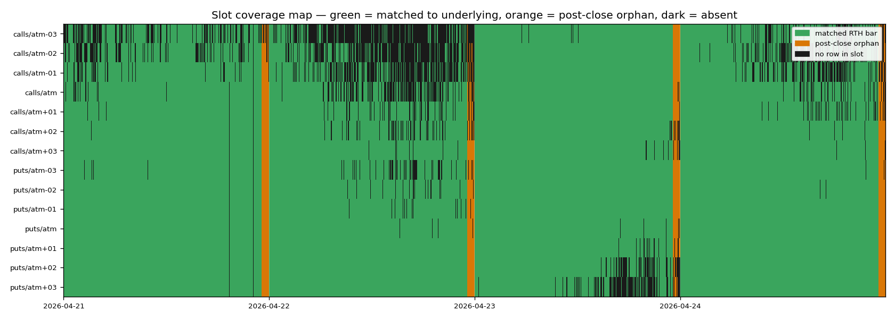
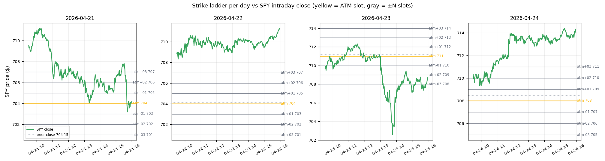
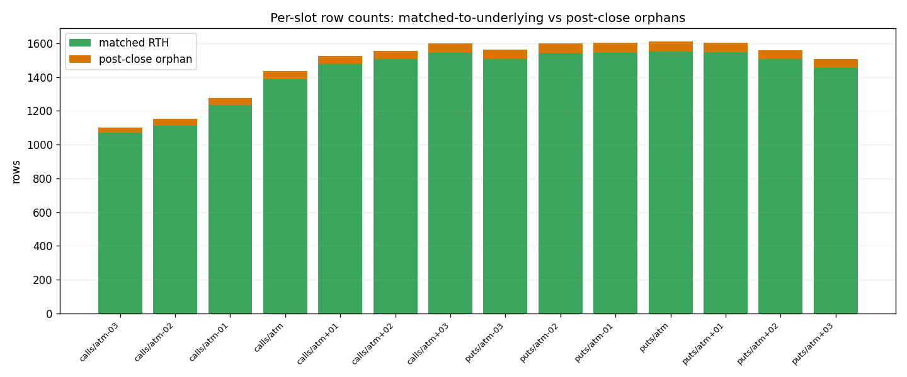
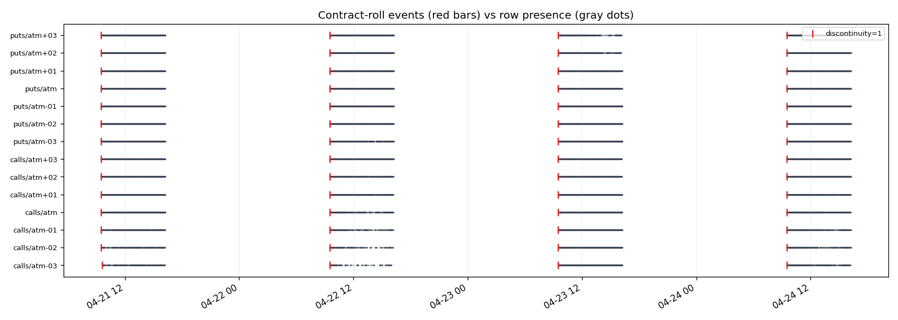
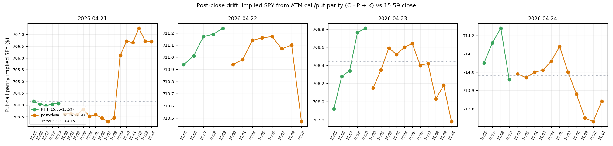
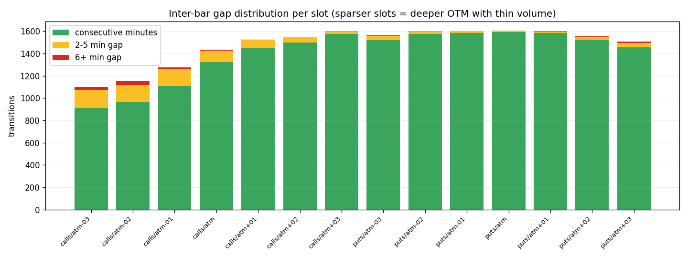

PASS — every option timestamp lies on the same 1-minute UTC grid as the underlying. Strikes are stable within each trading day and price-ordered (atm-3 < ... < atm+3). Calls and puts share the same strike at every slot label. Discontinuity flags fire exactly on contract-ticker changes.
WARN — 699 option timestamps (out of 20,681) have no matching underlying bar. All of them are in the 16:00-16:14 ET window: SPY options trade through the closing rotation while the underlying file is RTH-trimmed at 15:59 ET. This is a session-window difference, not a grid-alignment bug.
| Date | Expiry | Prior close | Calls selected | Puts selected |
|---|---|---|---|---|
| 2026-04-21 | 2026-04-21 | 704.15 | 7 | 7 |
| 2026-04-22 | 2026-04-22 | 704.15 | 7 | 7 |
| 2026-04-23 | 2026-04-23 | 711.21 | 7 | 7 |
| 2026-04-24 | 2026-04-24 | 708.44 | 7 | 7 |
Each row is one slot CSV; each column is one minute on the unified grid. Green cells are option bars matched to an underlying bar; orange cells are post-close orphans; dark cells mean the slot file had no row at that minute (either the option didn't trade or it was outside the slot's active range).

Yellow line is the ATM slot strike for that day; gray lines are the ±1 / ±2 / ±3 strikes. Dotted gray is the prior-day close that anchors the ATM choice. Strikes are price-ordered and identical across calls and puts within each day.

The taller bars are the slots near ATM (more frequent trades). The orange caps are the 15-minute post-close window. Every slot's orphan count = 15 bars/day × number of days the slot was active.

Red bars mark discontinuity=1 rows — the first bar after the slot's contract
identity changed. They land exactly on day boundaries, as expected for 0DTE
(the chosen expiry rolls forward by one calendar day every session).

Implied SPY from put-call parity (C - P + K) on the ATM pair, plotted across 15:55..16:14 ET. The dotted gray is the 15:59 SPY close. Drift inside the closing rotation is small (under $0.50) on three of the four days. 2026-04-21 is the outlier: a real ~$3 move between 16:08 and 16:09 — likely a post-close print event. Any IV/Greek computed against the 15:59 underlying spot for those late bars on 04-21 would be wrong by ~3 SPY points.

How often consecutive rows in a slot are exactly 1 minute apart vs gapped. Deeper-OTM slots (atm-3, atm+3) gap more because they trade thinner.

python PythonDataService/generate_options_companion_report.py --zip <path>.